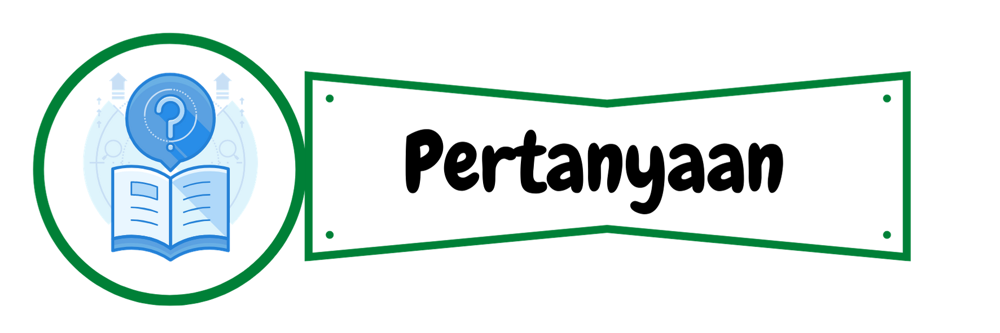

Setelah kamu menjawab dengan benar, tekan tombol cek jawaban
Jika jawaban kamu benar, maka akan muncul ikon
Jika jawaban kamu salah, maka akan muncul ikon

1. Berapakah translasi \[T=(a,b)\] yang sesuai untuk transformasi berikut?
a. Titik \[P(2,5)\] ditranslasikan oleh \[T_{1}\] menghasilkan \[{P}'(4,6)\].
\[a\]=
\[b\]=
1. Berapakah translasi \[T=(a,b)\] yang sesuai untuk transformasi berikut?
b. Titik \[Q(-3,4)\] ditranslasikan oleh \[T_{2}\] menghasilkan \[{Q}'(2,-3)\].
\[a\]=
\[b\]=
1. Berapakah translasi \[T=(a,b)\] yang sesuai untuk transformasi berikut?
c. Titik \[R(4,-5)\] ditranslasikan oleh \[T_{3}\] menghasilkan \[{R}'(-1,2)\].
\[a\]=
\[b\]=
1. Berapakah translasi \[T=(a,b)\] yang sesuai untuk transformasi berikut?
d. Titik \[S(-5,-3)\] ditranslasikan oleh \[T_{4}\] menghasilkan \[{S}'(-2,2)\].
\[a\]=
\[b\]=
2. Jika titik \[(p,q)\] ditranslasikan oleh \[(3,-4)\] menghasilkan titik \[(-4,6)\]. Berapakah nilai \[p+q\]?
Nilai \[p+q\]=